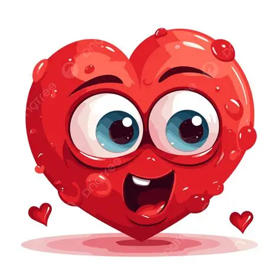

اتبرع ليه و لمين
الإنسان المصدر الوحيد للدم ولا يوجد بديل صناعي لتعويضهم
ما بين كل 10 بيدخلوا المستشفى في 1 محتاج نقل دم .
تعرف إن أكتر من حوالي 25 الف مريض بأنيميا وراثية ( أنيميا البحر المتوسط ، أنيميا الخلايا المنجلية ... وغيرهم ) محتاجين دم بشكل مستمر مدى الحياة ده غير طبعا مرضى الفشل الكلوي و الكبدي و الأورام .
ده غير مصابي الحوادث
طب مفكرتش لو -لا قدر الله ، اللهم عافي الجميع - حد من أقرايبك دخل المستشفى و محتاج دم بشكل عاجل جدا ، الوضع هيبقى عامل ازاي ؟
خلينا أبسطلك الموضوع
لا يمكن ضمان توفر الدم فى الوقت المناسب إلا بالحرص على التبرع التطوعى المنتظم فهو الوسيلة الوحيدة لضمان توافر الدم الآمن . ففي حالة احتياج كيس دم بشكل عاجل يجب توافر كيس دم جاهز للصرف فورا (حيث أن تبرعك وقتها لن يصل لمريضك قبل 24 ساعة على الأقل )..
ودي حاجة تأكد إننا محتاجين يكون عندنا اكتفاء لأكياس الدم فلو كل واحد قادر اتبرع بكدا نقدر نوفر الدم لكل شخص محتاجه.


يعني هي الدنيا وقفت على تبرعي أنا ؟ ما الناس كتير و صحتهم أحسن مني
خليني أقولك أن مش كل الناس تنفع تتبرع بالدم ، لازم الشخص يتوفر فيه شروط معينة عشان أضمن سلامة المتبرع و وحدة الدم اللي اتبرع بيها مثلا
لازم يبقى شخص بالغ وزنه مناسب سليم معندوش اي مرض مزمن و نسبة الهيموجلوبين مناسبة .
ده غير أن في حاجات ممكن تمنع التبرع بشكل مؤقت زي مثلا بعض الأدوية ( مضادات حيوية ، أدوية نفسية ) ، التطعيمات ، تدخلات الأسنان .
طب ما أنا خايف من التبرع ، و ممكن يحصل لي أعراض
تخيل معايا كدا :
ربنا أنعم عليك و أكرمك ب 5←6 لتر دم في جسمك ، هتتبرع منهم بأقل من نص لتر (400←450 ملللتر ) ، كدا كدا جسمك هيعوضهم تاني بشكل سريع جدا و هتقدر تمارس أنشطتك اليومية في نفس اليوم عادي (مع مراعاة تجنب المجهود العنيف ) في الجهة الأخرى قاعد طفل/ مريض مستني نص اللتر ده عشان يمارس حياته بشكل طبيعي زي باقي الأطفال ...
شكة الإبرة اللي حضرتك شايل همها و خايف منها ، في طفل / مريض قاعد مستنيها و أهله بيدعوا أنهم يوصلوا لمرحلة الشكة عشان بيتوقف عليها حاجات كتير منها أن ممكن يفقدوه -لا قدر الله -.
حبة الأعراض اللي حضرتك خايف يحصلوا زي مثلا الدوخة و الغثيان و الهبوط مفكرتش أن ممكن حد بيعاني منهم طول حياته لحد ما يستلم الدم ...
لحظة تأمل
طب حضرتك فكرت في حالة طفل من اول ما تم 6 شهور وهو محتاج دم بشكل منتظم و مستمر ، فكرت وضع أهله هيكون ازاي ؟ فكرت إنهم شايلهم هم هنوفر له دم طول حياته ازاي ؟
طب فكرت الطفل ده لما يكبر شوية و يبدأ يفهم حالته أو مثلا يقارن حالته بحالة شخص سليم معافى بيمارس حياته بشكل طبيعي.
طب هو لما يعرف أن علاجه بأيد ناس ربنا أنعم عليها بالصحة ، فكرت هيكون اي وضعه ....
أفكرك بقول نبينا عليه الصلاة و السلام :
﴿ مثل المؤمنين في توادهم وتراحمهم وتعاطفهم مثل الجسد إذا اشتكى منه عضو تداعى له سائر الجسد بالسهر والحمى﴾